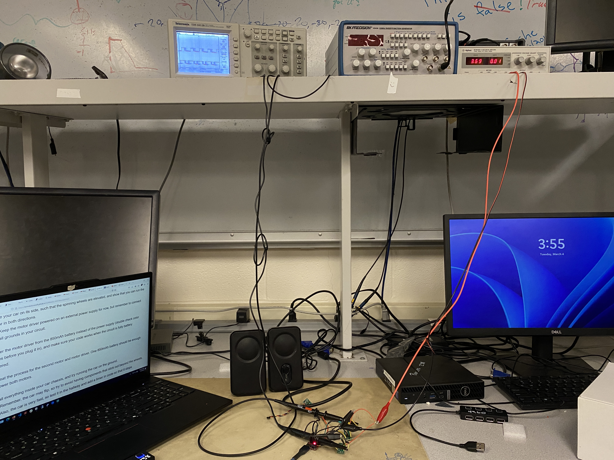
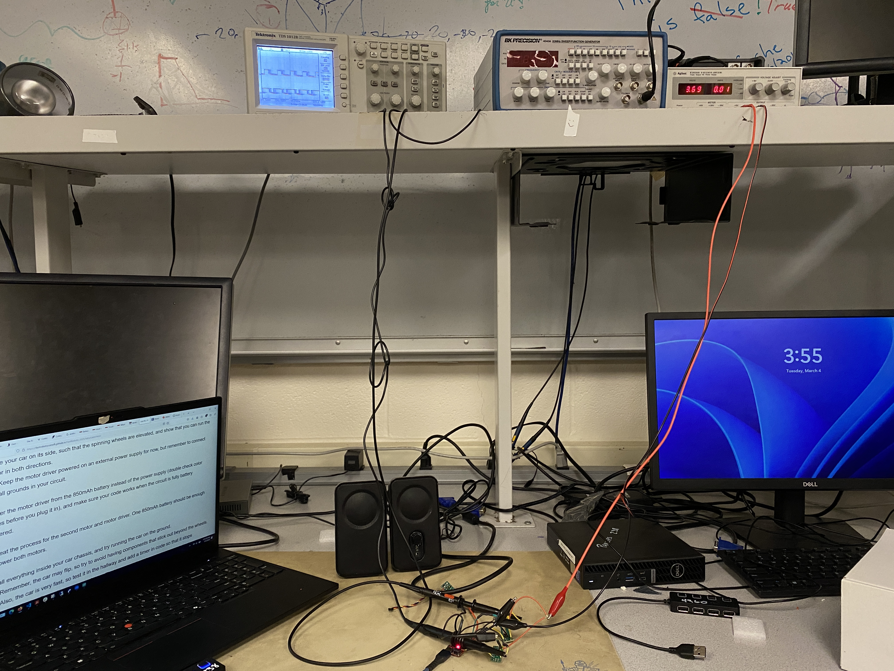

Lab 4
Prelab
Wiring Diagram
Figure 1 below shows how I chose to wire my complete system. At a high level, I parallel-coupled the input and outputs of my motor drivers to allow two channels to drive each motor, allowing me to deliver twice the current to each motor. I chose to use pins A0, A1, A4, and A5 to connect my motor drivers' inputs. The outputs of the motor driver would be to the motors themselves. The motors would be powered by the 850 mAh battery, while the Artemis would be powered by the 650 mAh battery. The motor drivers were powered by a battery with a higher power rating due to the fact that the current draw for the motors is higher than what is required by the Artemis.
Lab Tasks
Short video of wheels spinning as expected on the side (including code snippet it's running on). Short video of both wheels spinning (with battery driving the motor drivers).
Testing my Soldering by Spinning the Wheels
A large majority of this lab involved soldering the necessary components together, such as the motor drivers and the batteries. When working with such intricate systems, it is advisable to take an incremental approach. So, I started by soldering one motor driver's input pins to the Artemis and connecting the output pins to an oscilloscope. Instead of connecting the VIN to the battery, I connected it to a power supply. The datasheet for the motor driver says that it can accept voltages in the range of 2.7V to 10V. I chose the voltage to be 3.7V, which was within the range.
Next, I flashed the Artemis with code to vary the PWM signal, in hopes to see the output waveform on the oscilloscope to change. For just one motor driver, the waveform below was seen.
After this was successful, I soldered my second motor driver in a similar fashion and recorded the PWM signals. The code for varying the PWM signal is shown in Figure 2 below.
For two motors, the waveform below was seen.
Overall, to perform this exercise, my setup is shown in Figure 3 below.
 

After I had ensured that my soldering was done well, I connected the outputs of my motor drivers to the motors. The setup function looked the same, as I simply initialized my GPIOs (A0, A1, A4, A5) as output pins. The loop function is shown in Figure 4 and it moves one set of wheels forwards and then backwards, as shown by the video below. A similar code was run for the second set of wheels, except the GPIOs were now 4 and 5.
One set of wheels moving:
The other set of wheels moving:
Lastly, I added code for both wheels moving together and connected a battery to the Artemis and the motor drivers as well:
Components in the Car
Next, I secured the car as shown in the pictures below.
Lower Limit PWM Value
When I was initially testing the motors, I set the PWM value to around 150, as it was around the middle of the 0-255 range. I realized that with this value, the robot zoomed across the floor, as shown in the video below.
So, I incrementally decreased the PWM value. Overall, I noticed that a PWM value of 40 allows the robot to run without having to push it to start from rest. If I went lower, I had to push the robot a little, which would give it the initial force it required to continue moving. If I went higher, the robot would simply move faster. A video of the PWM value of 40 and after calibration is shown in the section below.
Calibration
I noticed that my robot tended to steer to the right when placed on a straight line. This meant that my motors were not spinning at the same rate. In order to accomodate for this behavior, I increased the PWM value to be around 8 units higher for the right wheel than the left wheel, which is a calibration factor of 1.2x. This allowed my robot to drive in a more straight path than before. The video below shows the robot's motion after being calibrated. Note that I aligned the robot's left wheel on the line and the robot ends up just slightly to the right of the line on the ground.
The code describing this behavior is shown below.
Open Loop Control
Lastly, I wanted to control the robot through issuing commands for it to go straight, and make a few turns, then continue to rotate. I looped this behavior in a while loop that ran for a certain amount of time, as shown in the code snippet below. To ensure that the robot stopped, I added in a few milliseconds where the PWM would be set to 0.
Below is a video demonstrating how this control ended up working.
Code Reorganization
After completing the majority of this lab, I realized that it would be useful to have functions describing movement. I debated on whether I wanted a function for each movement and turn, but I ended up creating a function that simplified handling four pin outputs and combined the four repeated lines (along with a delay line) into one using the function shown below.
References
- For reference on how others have wired their systems, I refered to Nila Narayan's webpage.